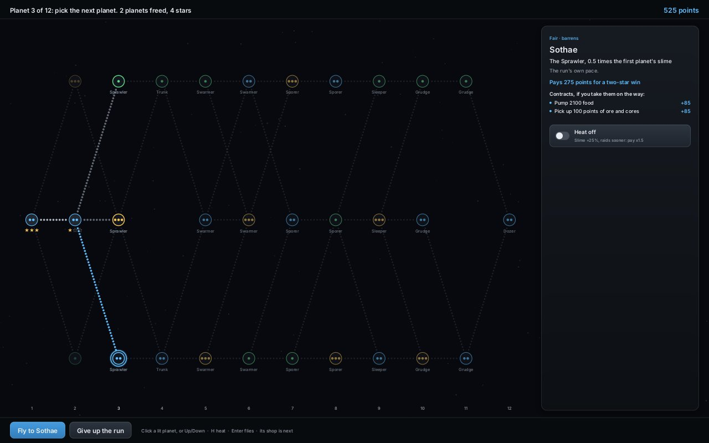
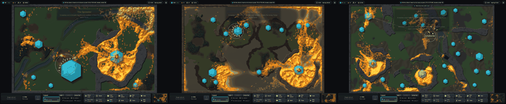
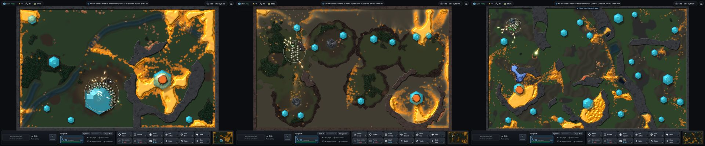
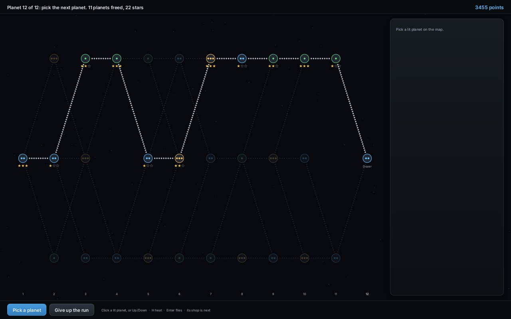

<title>The Run's Star Map</title>
<meta name="claude:viewport-fit-sides" content="cover">
<link rel="stylesheet" href="https://fonts.googleapis.com/css2?family=Space+Grotesk:wght@500;700&family=Inter:wght@400;600&family=JetBrains+Mono:wght@400&display=swap">
<style>
/* Layout: one dark column like the game's own Stars page; pictures full width, numbers under each. Single dark look by choice. */
:root {
  --bg: #090b10; --panel: #12161e; --line: #252c38; --fg: #dfe5ee; --dim: #8a95a6;
  --safe: #5fcf8f; --fair: #5fb4f0; --hard: #f2b744;
  --display: "Space Grotesk", system-ui, sans-serif; --body: "Inter", system-ui, sans-serif; --mono: "JetBrains Mono", ui-monospace, monospace;
  color-scheme: dark;
}
body { background: var(--bg); color: var(--fg); font-family: var(--body); font-size: 15px; line-height: 1.55; }
main { max-width: 1000px; margin: 0 auto; padding-block: 40px 64px; padding-left: max(16px, env(safe-area-inset-left, 0px)); padding-right: max(16px, env(safe-area-inset-right, 0px)); display: grid; gap: 36px; }
h1, h2 { font-family: var(--display); text-wrap: balance; margin: 0; }
h1 { font-size: 2.1rem; }
h2 { font-size: 1.25rem; }
p { margin: 0; max-width: 68ch; }
section { display: grid; gap: 12px; }
figure { margin: 0; display: grid; gap: 8px; }
figure img { width: 100%; border: 1px solid var(--line); border-radius: 6px; display: block; }
figcaption { color: var(--dim); font-size: 0.9rem; max-width: 80ch; }
.pips { display: flex; flex-wrap: wrap; gap: 8px 20px; font-size: 0.9rem; }
.pip { display: inline-flex; gap: 6px; align-items: center; }
.dot { width: 10px; height: 10px; border-radius: 50%; display: inline-block; }
.s { color: var(--safe); } .f { color: var(--fair); } .h { color: var(--hard); }
.tbl { overflow-x: auto; }
table { border-collapse: collapse; font-variant-numeric: tabular-nums; font-size: 0.9rem; min-width: 520px; }
th, td { text-align: left; padding: 6px 14px 6px 0; border-bottom: 1px solid var(--line); }
th { color: var(--dim); font-weight: 600; font-size: 0.8rem; text-transform: uppercase; letter-spacing: 0.05em; }
code { font-family: var(--mono); font-size: 0.85em; color: var(--dim); }
.lede { color: var(--dim); }
</style>
<main>
  <header style="display:grid;gap:10px">
    <h1>The run's star map</h1>
    <p class="lede">Twelve steps from the landing world to the home world. After each won planet you pick the next from two or three, each clearly Safe, Fair or Hard, and the harder ones pay more. Built 2026-11-26 from the owner's pick of directions 1 and 4.</p>
    <div class="pips">
      <span class="pip s"><span class="dot" style="background:var(--safe)"></span>Safe: one pip, smaller slime, no twist, pays x0.7</span>
      <span class="pip f"><span class="dot" style="background:var(--fair)"></span>Fair: two pips, the run's own pace, pays x1</span>
      <span class="pip h"><span class="dot" style="background:var(--hard)"></span>Hard: three pips, bigger slime, always a twist, pays x1.5 and a rare shop card</span>
    </div>
  </header>

  <section>
    <h2>The map at step 3</h2>
    <figure>
      
      <figcaption>Run 3, two planets won. The pane shows the picked planet: its pip and biome, its slime, what a two-star win pays (275), two optional contracts (+85 each) and the Heat switch (slime +25%, raids sooner, pay x1.5). Lanes cross by one lane at most, so a pick now decides the next ones. Every planet in a column meets the same species.</figcaption>
    </figure>
  </section>

  <section>
    <h2>One step, three planets, side by side</h2>
    <figure>
      
      <figcaption>Run 3, step 3, landed <span class="s">Safe</span> (left), <span class="f">Fair</span> (middle) and <span class="h">Hard</span> (right), the greedy bot, 10 s to 2:00 every 5 s. All three meet the Sprawler. Heart: 614, 598 and 1,089. Slime size (walkers): 0.35, 0.47, 0.87. The Hard planet is a bigger map with more crystals and a wind twist.</figcaption>
    </figure>
    <figure>
      
      <figcaption>The same three at 1:30.</figcaption>
    </figure>
  </section>

  <section>
    <h2>Does the bot find them ordered?</h2>
    <p>The run bot played the Safe, Fair and Hard planets of steps 3 and 6 on six run seeds, the route before them Fair. Counts are seeds where the harder pip cost more / less / the same; one-sided sign test.</p>
    <div class="tbl">
      <table>
        <thead><tr><th>Step</th><th>Pair</th><th>Soldiers lost</th><th>Time to win</th></tr></thead>
        <tbody>
          <tr><td>3</td><td>Safe &lt; Fair</td><td>3 / 1 / 1, p 0.31</td><td>0 / 5 / 0</td></tr>
          <tr><td>3</td><td>Fair &lt; Hard</td><td>4 / 0 / 0, p 0.06</td><td>4 / 0 / 0, p 0.06</td></tr>
          <tr><td>6</td><td>Safe &lt; Fair</td><td>5 / 0 / 0, p 0.03</td><td>5 / 0 / 0, p 0.03</td></tr>
          <tr><td>6</td><td>Fair &lt; Hard</td><td>2 / 3 / 0, p 0.81</td><td>2 / 3 / 0</td></tr>
        </tbody>
      </table>
    </div>
    <p>Slime size is ordered on every seed (step 3 about 0.3, 0.45, 0.95; step 6 about 1.45, 2.3, 5.5). Soldiers lost on seeds with all three: step 3 <span class="s">3</span>, <span class="f">17</span>, <span class="h">118</span>; step 6 <span class="s">3</span>, <span class="f">95</span>, <span class="h">161</span>. Where the bot is at a floor (step 3 Safe and Fair both cost it almost nothing) or a ceiling (step 6 Fair and Hard both bleed it) the pairs don't separate. None survives a correction for eight tests.</p>
    <p>A first pass put each planet's species at its pip's place, so step 3's Safe met the Drifter and Fair the smaller Sprawler, and Safe was slower to win than Fair on 5 of 6 seeds. Now a fork shares the step's species. Offsets stay Safe -1, Fair 0, Hard +1.5; the first retune if Hard feels too close to Fair late in a run is Hard +2.</p>
  </section>

  <section>
    <h2>A whole route</h2>
    <figure>
      
      <figcaption>The same run picked by turns through step 11, stars under each freed planet, the home world (Dozer) last.</figcaption>
    </figure>
  </section>
</main>
